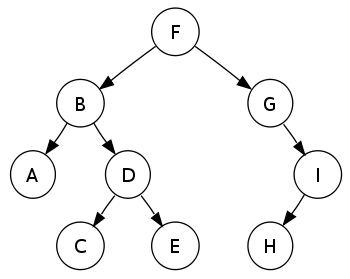

트리는 매우 중요한 데이터 객체중에 하나이다.
직관적으로 트리는 하나의 루트노드에 여러 다른 노드들이 연결되고 또 그 노드들에 다른 노드들이 연결되는 위계적 자료구조로도 느껴진다.
흔히 생각하는 가족관계도와 비슷한 형태를 띈다.
각 노드에 붙는 서브트리의 개수를 그 노드의 차수라고 부르는데, 차수가 최대 2인 노드들로만 이루어진 트리를 특별히 이진트리라고 부른다.

이진트리 역시 그래프와 비슷하게 순회에 대한 고민이 존재하는데,
자신의 노드를 언제 방문할지에 따라 중위순회, 후위순회, 전위순회 등으로 나눌 수 있다.